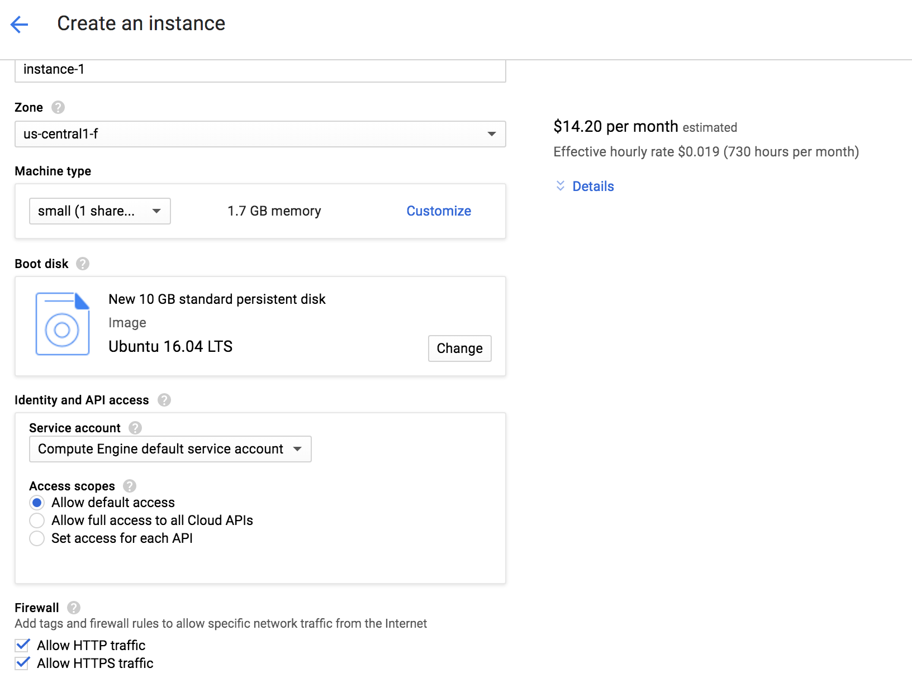

Jupyter Revolution
In this page I will describe the process of installing a GCE machine capable of running
Jupyter Lab.
The first step is to create an account on Google Compute Engine create a Projct
and instantiate one machine.
I am using the following configurations:
- I am allowing HHTP and HTTPS connections
- I am using an UBUNTU 16.04 image
- I am using a small machine type
- The machine should have a fixed permanent IP

The next step is to start the instance and connect to the instance (the command can be obtained clicking on the
the 3 dots close to ssh).
Before using this command you have to install gcloud SDK (instructions) and be sure you have
python2 on your system. I am using pyenv to guarantee that.
pyenv local 2.7.8
gcloud config set project <myproject>
gcloud auth login
#This sets the firewall rules
gcloud compute firewall-rules create jupyternotebook --allow tcp:8888 --source-ranges=0.0.0.0/0 --description="allows connections to jupyter server"
#This is the command you can get on GCE site
gcloud compute --project <myproject> ssh --zone "us-central1-f" <machinetype>
The next steo is to install anaconda.
apt-get install bzip2
wget https://repo.continuum.io/miniconda/Miniconda2-latest-Linux-x86_64.sh
sudo bash Miniconda2-latest-Linux-x86_64.sh
conda install --yes scikit-learn
conda install --yes pandas
conda install --yes jupyter
conda install --yes -c conda-forge jupyterlab
I am also installing some extra-packages
conda install --yes mpld3
conda install --yes numba
conda install --yes seaborn
conda install --yes -c conda-forge jupyter_contrib_nbextensions
conda install --yes sh
conda install --yes pip
conda install --yes altair --channel conda-forge
jupyter nbextension enable vega --py --sys-prefix
Then you can start the Jupyter Lab using:
jupyter lab --ip=* --port=8888 --no-browser &
To start using the Jupyter Lab you have to open a browser and type
http://:8888".